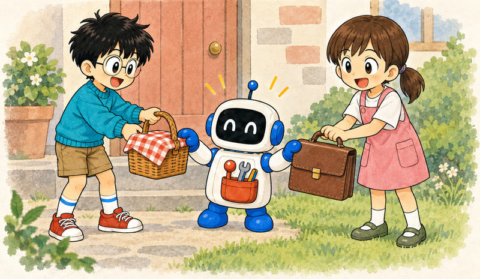
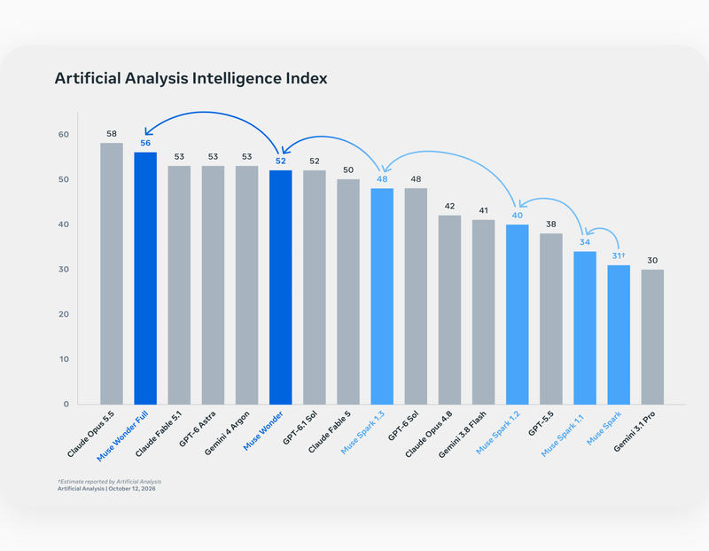
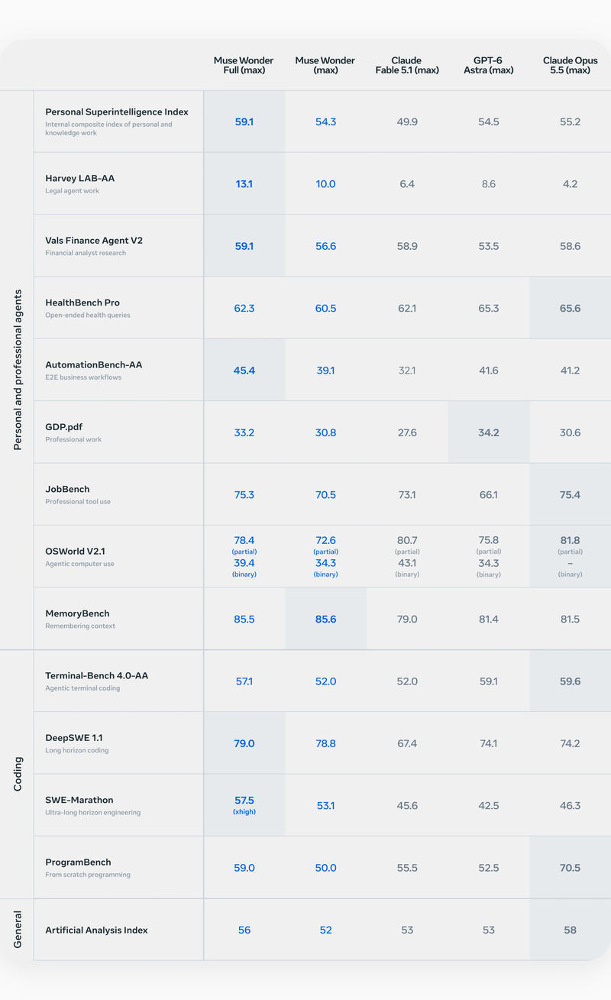
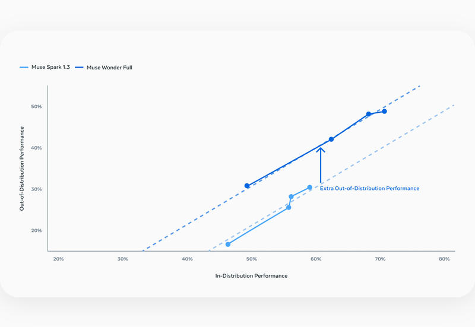

Feature 08 · VERBATIM · 2026 10
Muse Wonder: A Frontier Model For Personal & Professional AI Agents
A frontier model that leads on personal and professional agents

Today, we’re excited to introduce the Muse Wonder series with Muse Wonder and Muse Wonder Full, our most capable models that deliver state-of-the-art performance on personal and professional agentic tasks. Together, they mark the next step on our scaling ladder and a major leap toward personal superintelligence. Muse Wonder brings together Active Memory and Active Focus to keep track of what matters to you and work diligently toward what you want to accomplish.
Muse Wonder is available today through the Meta Model API and Muse Code, and Muse Wonder Full is available today for Muse Code subscribers.
Muse Wonder will soon power experiences in Muse, and will roll out first to subscribers. Muse Wonder will also power artifact generation and processes that require more intelligence. And in the future, we’ll be using Muse Wonder to develop specialized models that we can bring to everyone using Muse.
Scaling Toward Personal Superintelligence

Fourteen months ago, we began a ground-up overhaul of our artificial intelligence efforts. In that time, we’ve gone from rebuilding our stack from first principles to pushing the frontier.
When we introduced Muse Spark, we outlined our approach to predictable, rigorous scaling. Today’s release builds on that work across pretraining and reinforcement learning, delivering our most capable models yet. Trained at our gigawatt-scale Prometheus data center, Muse Wonder and Muse Wonder Full bring together the work of teams across Meta to deliver frontier capabilities for complex tasks at work and in everyday life — another step toward bringing personal superintelligence to the billions of people who use our products.
Frontier Capabilities
Model Highlights

The Muse Wonder series achieves state-of-the-art results across key benchmarks for personal and professional agents, memory, and coding.
The full results below compare Muse Wonder and Muse Wonder Full with other frontier models across a broad evaluation suite.
For more details about our evaluations, see our report.
The results above provide a broad view of the models’ performance. We now take a closer look at four areas central to their work on real-world tasks: domain expertise, Active Memory, Active Focus, and frontier coding.
Domain Expertise
Muse Wonder and Muse Wonder Full apply specialized knowledge to problems people encounter at work and in daily life, from understanding a lease to making sense of financial or health information. Our evaluations include tasks in law, finance, and health that test this ability. Harvey’s Legal Agent Benchmark (LAB), for example, requires models to work with source documents and follow detailed instructions to produce legal work products.
Active Memory
One of the most critical steps towards useful personal and professional agents is reliable memory. Models need to remember what matters and recognize when earlier information becomes relevant. We call this Active Memory: carrying important context about you across conversations and actively retrieving the details relevant to the task at hand.
Active Focus
Using that context to complete a task also requires sustained effort. Active Focus describes how Muse Wonder continues working toward a challenging goal: trying alternative approaches, working through blockers, and adapting to new information. Along the way, it asks for clarification when needed and checks in before taking important actions. We evaluate focus through FocusBench and sustained execution through SWE-Marathon, which tests work on long-running software projects.
Frontier Coding
Coding brings these capabilities together. Building software requires tracking requirements, making changes across a codebase, and working through repeated cycles of testing and revision. Muse Wonder and Muse Wonder Full deliver frontier coding performance, supporting projects from small applications to complex software. We trained both models on diverse, long-running tasks to help them sustain progress across this process.
Muse Wonder builds a playable 3D kitchen game from customizable image inputs.
Capabilities That Generalize

Two models often have similar benchmark scores, yet one seems to handle a much wider range of unfamiliar tasks. That’s what complaints of “benchmaxxing” and praise for “big model smell” both get at: a breadth of capability that popular benchmarks in a few domains can’t fully capture.
To quantify this mismatch, we investigate how performance on tasks targeted during post-training relates to performance on unfamiliar tasks as we scale test-time compute. The plot below compares Muse Spark 1.3 and Muse Wonder Full, with each point denoting performance at a distinct reasoning effort. The horizontal axis shows the model’s score on a composite representative of the tasks we focused on during post-training (“in-distribution”). The vertical axis shows the average score on a set of tasks we did not target during post-training (“out-of-distribution”).
Both of our models improve similarly on out-of-distribution tasks as we scale test-time compute. But given its in-distribution performance, Muse Wonder Full performs even better on unfamiliar tasks than the Muse Spark 1.3 trend would predict. This upward shift is because Muse Wonder and Muse Wonder Full build on larger, stronger base models: a stronger base yields post-training gains that carry over more effectively to unfamiliar tasks. That versatility especially matters for personal agents, which need to handle many combinations of goals, tools, and constraints — not all of which we can anticipate during training.
Working directly in a browser and across apps, Muse Wonder builds a running plan (Map data © OpenStreetMap contributors) based on personal preferences and circumstances.
Muse Wonder designs and orders custom swag based on real photos taken from a personal Instagram profile.
Muse Wonder prepares a custom wedding seating chart based on a list of complex matching requirements.
Safety at the Frontier
Delivering personal superintelligence to everyone requires a significant investment in alignment and safety. A personal agent takes actions on a user’s behalf and might handle context such as messages, calendars, and private documents. That level of access demands a model that exercises discretion with private information and resists misuse. We trained the Muse Wonder family to lead on both dimensions, with robustness to adversarial instructions and careful handling of private information.
As models become more capable, our goal is to help people harness those capabilities safely and responsibly. Muse Wonder offers our strongest safeguards to date against CBRN (chemical, biological, radiological, and nuclear) and cyber misuse, while preserving access to frontier cyber capabilities for defensive use, per our Meta Superintelligence Scaling Framework.
Muse Wonder is our most aligned model to date, and alignment is central to how we build personal superintelligence. A full report with additional safety evaluations will be available soon.
We hope that Muse Wonder and Muse Wonder Full give more people the power to pursue their dreams and build the world they want. This is a major technical step toward personal superintelligence for everyone, with much more to come.